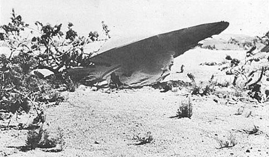
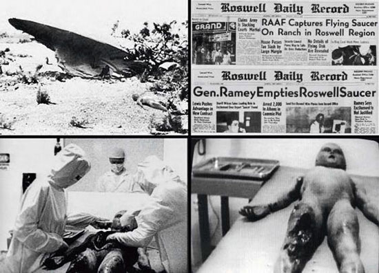
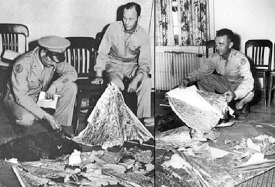
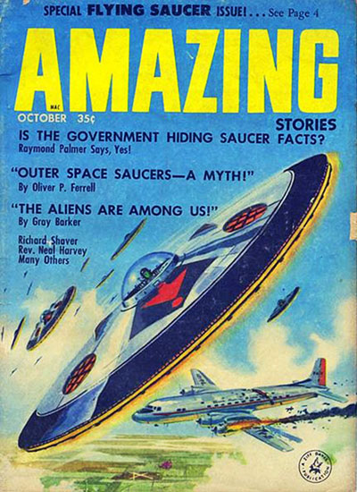

Ciertamente, el famoso caso del OVNI de Roswell ha estado en el corazón de la ufología desde el 2 de julio de 1947, cuando los militares anunciaron sensacionalmente en un comunicado de prensa que habían encontrado los restos de un platillo volador estrellado en un desierto cercano.
Mac Brazel, un granjero de Nuevo México, descubrió unos restos dispersos por su rancho, comunicándoselo al sheriff el 5 de julio, según lo describió Mac Brazel al Roswell Daily Record en su edición del 8 de julio.
Esta descripción coincide con la dada por Charles B. Moore, profesor emérito de Física de la New York University, que desarrolló los globos con los que los Estados Unidos pretendían espiar a la URSS.
En los periódicos del 8 de julio se dio el siguiente titular: "Las fuerzas aéreas capturan un platillo volante en un rancho de la región de Roswell". Se avisó al comandante Jesse Marcel de la base aérea del Ejército en Roswell, que fue personalmente al lugar.
Pero al día siguiente se retractaron de la declaración, diciendo que de hecho, era un globo dañado de la Fuerza Aérea estadounidense.
Más tarde, testigos presenciales, afirmaron haber visto cuerpos extraños dentro de la "nave accidentada", que junto con los restos fueron llevados a una base militar secreta.
En otro artículo se relata cómo Brazel y su hijo encontraron el material el 2 de julio, que estaba formado principalmente por tiras de goma, papel de aluminio, cartón y varillas de madera, aunque se dice que los verdaderos restos fueron sustituidos por el equipo militar cuando llevó el material a la base de Fort Worth.
Y ahí nació el mayor mito de la historia de la ufología, una de las teorías de la conspiración más famosas y una de las piedras angulares centradas en defender la idea de la visita de extraterrestres a la tierra.
Posteriores informes de la Fuerza Aérea de los Estados Unidos de septiembre de 1994 y junio de 1997 afirmaban que lo estrellado en Roswell eran los restos de un vuelo del «Proyecto Mogul».
El investigador británico sobre temática OVNI y paranormal, Nick Redfern, sugiere que el objeto que se estrelló en el desierto, en realidad era un vehículo aéreo experimental de alto secreto, que transportaba cobayas humanos en su interior, que perecieron en el accidente.
En el libro, titulado "La Conspiración OVNI de Roswell - Exponiendo un Secreto Impactante y Siniestro / The Roswell UFO Conspiracy - Exposing a Shocking and Sinister Secret", el autor proclama que el mito del OVNI de Roswell, fue impulsado por el propio gobierno de EE.UU. para encubrir la horrible verdad que ocultaba.
La teoría de Redfern proviene de una entrevista que él mismo realizó en 2001 mientras investigaba el famoso caso Roswell.
Se reunió con una anciana, que afirmó haber trabajado en el Oak Ridge National Laboratory en Oak Ridge, Tennessee.
Afirmó que poco después de la Segunda Guerra Mundial, vio a "conejillos de indias humanos", entre ellos ciudadanos japoneses, personas con discapacidad y prisioneros. Ella contó que los usaban en experimentos con nuevos proyectos de aeronaves secretas. A través de su testimonio y otros testigos con los que ha hablado en los años siguientes, Redfern ha reconstruido lo que podría esconderse realmente tras este caso:
Los llamados "alienígenas" encontrados en el accidente de Roswell, probablemente fueron algunos de esos seres humanos prescindibles para el gobierno, que fueron usados en estas pruebas casi suicidas para probar los efectos que tiene sobre el cuerpo humano, ascender a grandes altitudes.
La causa del accidente aéreo nocturno de julio de 1947 que dio pie al mito en Roswell, podría haberse producido cuando el globo colisionó con la embarcación que lo acompañaba, lo que llevó al globo a explotar y a provocar una lluvia de gran cantidad de restos de estaño sobre el rancho de Mac Brazel.
El señor Brazel había dicho que vio dos globos en su rancho.
Alguna gente ha sugerido que quizás los jeroglíficos que alguna gente vio entre los restos, podrían haber sido en realidad, escritura japonesa.
Evidentemente, esta teoría está resultando muy controvertida entre los investigadores de la temática ovni. A estas alturas, se hace muy difícil saber lo que realmente sucedió en Roswell, de la misma manera que es muy difícil saber qué se oculta detrás de gran cantidad de la fenomenología OVNI.
Si tenemos un espíritu mínimamente crítico, debemos hacernos algunas preguntas:
¿Porqué razón se estrellaría un artefacto en 1947, precisamente en EE.UU. y desde entonces apenas se ha vivido un fenómeno similar en ninguna otra parte?
¿Porqué, si está tan claro que nos visitan los extraterrestres, nunca, jamás y bajo ninguna circunstancia, hay una sola imagen clara de un OVNI?
¿Porqué ni tan solo ahora, cuando gran cantidad de la población dispone de artefactos de grabación en alta resolución?
Ahora pregúntense:
¿Qué es más lógico pensar?
¿Que en Roswell se estrelló un OVNI con alienígenas en su interior, por culpa de una absurda avería en una nave espacial tan avanzada que es capaz de cruzar el cosmos?
(Hacen un viaje de años luz con una tecnología que ni ahora podemos imaginar y se les desconectó un manguito del motor… ¿es eso? ¿de verdad?)
¿O quizás es más lógico pensar que el ejército de EE.UU. realizaba experimentos ilícitos y le interesó crear una gran pantalla de humo para que no se supiera lo que estaban haciendo?
Evidentemente, no habrá ni un solo ufólogo que quiera aceptar estas evidencias, por dos razones:
la primera, porque la mayoría de ellos viven de este asunto, o ganan dinero o fama gracias a ello.
la segunda, mucho más mundana, por no quedar como unos idiotas y unos engañabobos ante el resto de la gente.
No nos engañemos:
la ufología y las teorías de la conspiración que la rodean, se han convertido en una industria en sí misma, que se retroalimenta y se regenera constantemente.